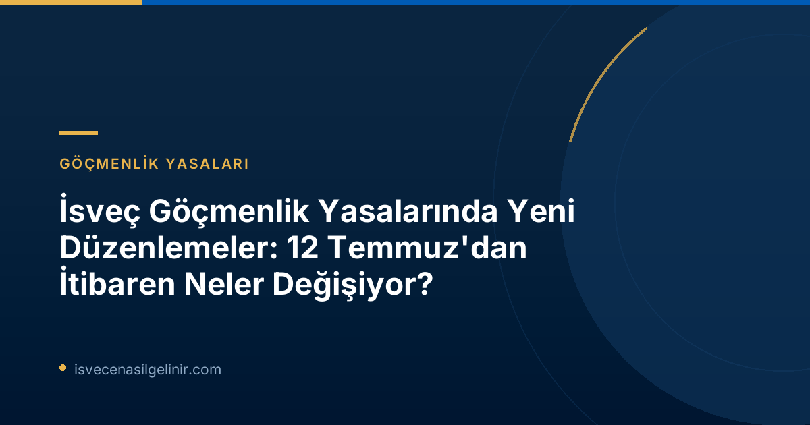

AB Göç ve İltica Paktı'na Uyum ve Yeni Tarama Süreci (Screening)
İsveç'in 12 Temmuz 2026 itibarıyla uygulamaya koyduğu yasal düzenlemelerin önemli bir bölümü, Avrupa Birliği'nin yeni Göç ve İltica Paktı'na uyum sağlamayı hedefliyor. Bu uyumun merkezinde, “tarama süreci” (screening) olarak adlandırılan yeni bir prosedür yer alıyor.
Tarama Sürecinin Amacı ve Kapsamı
Tarama süreci, uluslararası koruma (iltica) başvurusunda bulunan kişilerin İsveç'e girişlerinde yapılacak ilk değerlendirmeleri kapsar. Bu süreç, başvuru sahiplerinin kimliklerinin tespiti, güvenlik risklerinin değerlendirilmesi ve özel ihtiyaçlarının belirlenmesi gibi hayati adımları içerir. Amaç, hem ulusal güvenliği sağlamak hem de savunmasız kişileri erken aşamada tespit ederek uygun desteği sunmaktır.
Sorumluluk Dağılımı ve İşbirliği: Polis ve Migrationsverket
Yeni düzenlemelerle birlikte, tarama sürecinin ana sorumluluğu İsveç Polis Teşkilatı (Polismyndigheten)'na verilmiştir. Ancak İsveç Göçmenlik Dairesi (Migrationsverket) de bir tarama kurumu olarak atanmıştır. Bu nedenle, iki kurum arasında sürecin etkin bir şekilde yürütülmesi için kapsamlı bir işbirliği anlaşması imzalanmıştır. Bu anlaşma; taramanın nasıl yapılacağı, hangi kurumun hangi bölümden sorumlu olduğu ve takip süreçlerinin nasıl işleyeceği gibi konuları netleştirmektedir.
Migrationsverket Genel Müdürü Maria Mindhammar, “Migrationsverket ve Polisin tarama için ortak sorumluluk taşıdığı kısımlarda, tüm sürecin pratikte nasıl işleyeceği konusunda anlaştık. Anlaşma 12 Temmuz'dan itibaren yürürlüğe girecek ve süresiz olarak geçerli olacak.” açıklamasında bulunmuştur.
Taramanın Yapılacağı Merkezler
Tarama süreci başlangıçta aşağıdaki Migrationsverket merkezlerinde devreye alınacaktır. Bu merkezlerde Migrationsverket ve Polis Teşkilatı artık aynı binaları paylaşmaktadır:
- Boden
- Märsta/Arlanda
- Mölndal
- Malmö
Tarama Sürecinin İçeriği Nelerdir?
- Kimlik Kontrolü: Başvuru sahibinin kimliğinin tespiti.
- Güvenlik Kontrolü: Potansiyel güvenlik risklerinin değerlendirilmesi.
- Kırılganlık Kontrolü: Mağduriyet veya özel koruma ihtiyacı olan kişilerin belirlenmesi (örneğin, çocuklu aileler, engelliler, insan ticareti mağdurları).
- Basit Sağlık Kontrolü: İsveç'in bölgeleri (regioner) tarafından yürütülecek basit bir sağlık kontrolü.
Yasal Danışmanlık ve Kamu Avukatı Hakkındaki Değişiklikler
12 Temmuz'dan itibaren yürürlüğe girecek bir diğer önemli değişiklik, uluslararası koruma başvurusunda bulunan kişilerin ücretsiz hukuki danışmanlık ve kamu avukatı (offentligt biträde) edinme haklarını etkiliyor. Bu düzenlemeler de AB'nin asgari yasal gerekliliklerine uyum sağlamayı amaçlamaktadır.
Uluslararası Koruma Başvurularında Ücretsiz Hukuki Danışmanlık
Yeni yasaya göre, uluslararası koruma (iltica) başvurusunda bulunan herkes, başvuru sürecinin başında iki saatlik ücretsiz hukuki danışmanlık hakkına sahip olacaktır.
Temyiz Sürecinde Kamu Avukatı Hakkı
Eğer başvuru sahibi Migrationsverket'in kararını temyiz ederse (karara itiraz ederse), temyiz süreciyle bağlantılı olarak ücretsiz bir kamu avukatına sahip olma hakkı devam edecektir. Ancak ilk başvuru anındaki kamu avukatı hakkı değişmiştir.
| Özellik | Eski Durum (12 Temmuz 2026 Öncesi) | Yeni Durum (12 Temmuz 2026 Sonrası) |
|---|---|---|
| Ücretsiz Hukuki Danışmanlık (Başvuru Girişi) | Başvurunun tesliminden itibaren ücretsiz kamu avukatı hakkı olabiliyordu. | Başvuru sürecinin başlangıcında 2 saatlik ücretsiz hukuki danışmanlık. |
| Temyiz Sürecinde Kamu Avukatı | Temyiz sürecinde kamu avukatı hakkı mevcuttu. | Temyiz sürecinde ücretsiz kamu avukatı hakkı devam ediyor. |
İsveç'e göçmenlik süreçleriyle ilgili güncel bilgiler ve olası İsveç Vatandaşlık Testi hazırlıkları için sitemizi ziyaret edebilirsiniz.
Daimi İkamet İzni (PUT) Artık Yok: Kimler Etkilenecek?
İsveç göçmenlik yasalarındaki en çarpıcı değişikliklerden biri, özellikle iltica yoluyla ikamet izni alan kişiler için daimi ikamet izni (permanent uppehållstillstånd - PUT) alma imkanının ortadan kaldırılmasıdır. Bu adım, İsveç'in kendi yasalarını AB'nin asgari standartlarına uyumlu hale getirme çabalarının bir parçasıdır.
Değişikliğin Kapsamı ve AB Uyum Süreci
Bu düzenleme, AB Göç ve İltica Paktı'nın getirdiği çerçeveye birebir uyum sağlamaktadır. Temel olarak, iltica statüsüyle bağlantılı bir ikamet izni alan kişilerin doğrudan daimi ikamet iznine başvurma veya bu hakkı elde etme yolu kapanmıştır. Artık bu kişiler, belirli koşulları yerine getirmeleri halinde sadece süreli ikamet iznini uzatma hakkına sahip olacaklardır.
Geçici İkamet İzni Sahipleri İçin Yeni Durum
Eğer bir kişi daha önce iltica başvurusunda bulunmuş, geçici ikamet izni (tidsbegränsat uppehållstillstånd) almış ve ardından daimi ikamet iznine başvurmuşsa, Migrationsverket artık bu başvuruyu daimi ikamet izni için değerlendirmeyecek. Bunun yerine, kişinin sadece “uzatılmış ikamet izni” (förlängt uppehållstillstånd) için gerekli şartları sağlayıp sağlamadığına bakılacaktır. Bu, sürecin gelecekteki aşamalarında daimi ikamet yerine geçici statülerin korunmasına odaklanılacağı anlamına gelir.
Mevcut Daimi İkamet İzni Sahipleri Etkileniyor mu?
Bu değişiklikten önemli bir istisna bulunmaktadır: Halihazırda daimi ikamet iznine sahip olan kişiler bu yeni düzenlemeden etkilenmeyeceklerdir. Yani, daimi ikamet izni olanların statüsü ve hakları korunmaya devam edecektir. Değişiklik, gelecekteki başvuruları ve henüz daimi ikamet izni almamış kişileri kapsamaktadır.
İsveç Vatandaşlığına Giden Yol
Daimi ikamet izni koşulları değişse de, İsveç'te belirli bir süre yaşayıp entegrasyon şartlarını yerine getiren bireyler için İsveç Vatandaşlık Sınavı ile vatandaşlık başvurusu hala mümkündür. Süreç ve gereklilikler hakkında detaylı bilgi için sitemizi ziyaret edebilirsiniz.
Bu Değişiklikler Ne Anlama Geliyor?
İsveç'in göçmenlik yasalarındaki bu kapsamlı değişiklikler, hem başvuru sahipleri hem de İsveç'teki iltica ve göç politikaları açısından önemli sonuçlar doğuracaktır.
- Daha Sıkı Kontroller: Tarama sürecinin devreye girmesiyle birlikte, İsveç sınırlarında ve iltica merkezlerinde daha detaylı kimlik, güvenlik ve sağlık kontrolleri uygulanacaktır. Bu, ülkeye giriş yapanların profillerinin daha yakından inceleneceği anlamına gelir.
- Sınırlı Yasal Destek: Ücretsiz hukuki danışmanlık hakkının ilk aşamada kısıtlanması, başvuru sahiplerinin süreç başında kendi imkanlarıyla daha fazla yol kat etmesini gerektirebilir. Ancak temyiz sürecindeki haklar korunmuştur.
- Süreli İkamet İzni Vurgusu: Daimi ikamet izninin kaldırılması, İsveç'in iltica statüsüyle gelenlere yönelik politikasında süreli ikamet iznine daha fazla odaklandığını göstermektedir. Bu durum, uzun vadeli planlamalar yapan kişiler için yeni adaptasyon stratejileri gerektirebilir.
- AB ile Uyum: Değişiklikler, İsveç'in AB ortak göç ve iltica politikasına daha fazla entegre olduğunun bir göstergesidir. Bu, gelecekteki olası AB düzeyindeki diğer düzenlemelerin de İsveç mevzuatına yansıyabileceği anlamına gelebilir.
Sıkça Sorulan Sorular (SSS)
1. Bu değişiklikler sadece iltica başvurusunda bulunanları mı etkiliyor?
Evet, Migrationsverket'in duyurusunda belirtilen daimi ikamet izni (PUT) değişiklikleri ve yasal danışmanlık haklarındaki kısıtlamalar ağırlıklı olarak iltica (uluslararası koruma) başvurusunda bulunan kişileri etkilemektedir.
2. Türkiye'den İsveç'e çalışma veya eğitim amacıyla gelmek isteyenler bu değişikliklerden etkilenir mi?
Doğrudan iltica sürecini hedefleyen bu değişiklikler, çalışma veya eğitim amaçlı yapılan ikamet izni başvurularını doğrudan etkilememektedir. Ancak genel göçmenlik mevzuatındaki olası diğer değişiklikleri takip etmek her zaman önemlidir.
3. Yeni tarama süreci ne kadar sürecek?
Duyuruda tarama sürecinin spesifik süresine dair bir bilgi verilmemiştir. Ancak bu sürecin hızlı ve etkin bir şekilde tamamlanması hedeflenecektir, zira paketsiz girişlerin önlenmesi ve ilk değerlendirmelerin yapılması kritik öneme sahiptir.
4. Daimi ikamet iznim zaten var, statüm değişecek mi?
Hayır, duyuruda açıkça belirtildiği üzere, zaten daimi ikamet iznine sahip olan kişiler bu değişikliklerden etkilenmeyecektir. Mevcut statünüz ve haklarınız korunmaya devam edecektir.
Referanslar
- Migrationsverket Resmi Duyurusu: Flera lagändringar inom migrationsområdet från 12 juli
İsveç'e Göç Yolculuğunuzda Yanınızdayız!
İsveç'teki yaşam, çalışma veya eğitim hedeflerinize ulaşmak için güncel ve doğru bilgilere mi ihtiyacınız var? Uzman danışmanlarımızla iletişime geçin ve sürecinizi kolaylaştırın.